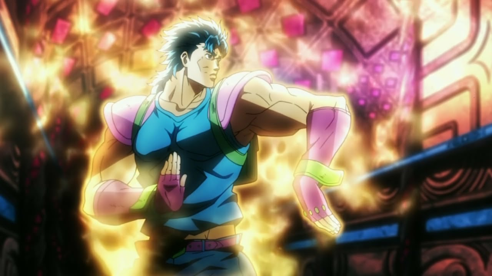
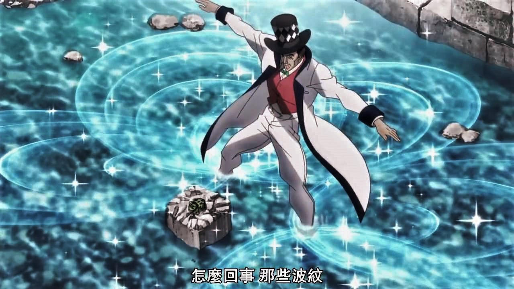
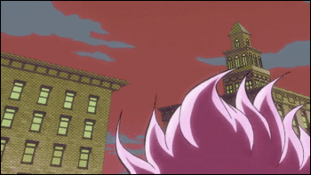

Что это вообще такое?
Хамон - это энергия, используемая в древней форме боевых искусств. Первоначально известен как Sendō. Посредством самоконтроля дыхания, обученный человек может производить энергию, проявляющуюся в виде пульсации по всему телу, которая идентична энергии Солнца, способной противостоять энергии, излучаемой Вампирами, Зомби и Людьми из колонн.
Как Хамон работает?
Хамон базируется на использовании энергии солнечных лучей с помощью дыхания и заполнения тела солнечной энергией. Для использования Хамона необходимо пройти специальное обучение по контролю дыхания. Однако не все способны использовать Хамон, лишь один из десяти тысяч способен владеть Хамоном, и главная характеристика в овладении Хамоном - это давление, которое испытывал человек, проходя сквозь жестокие ситуации в своей жизни. Но даже люди, не испытавшие ударов судьбы, все еще могут овладеть Хамоном, но в очень незначительной степени.
Использование
Хамон используется не только для битв с вампирами, с ним может влиять и на неодушевленные объекты. Объект, заряженный Хамоном становится очень опасным и его владелец может выполнять различные техники, которые можно комбинировать с его собственной тактикой, тем самым создавая для себя очень гибкий боевой стиль. Атаки Хамоном имеют эффект и на обычных людей.Из-за своей универсальной природы, все воины Хамона используют его усиливая различные вещи, например шарф, пузыри, вино, и шары (пара стальных шаров соединенных веревкой). Большинство самых сильных техник классифицируются как 'овердрайвы', имеют в названии цвет (пример: Yellow Overdrive). Предмет, на который воздействовала сила овердрайва, будет нести в себе заряд Хамона, и касание к такому предмету будет летально для вампиров. Это также может быть использовано, чтобы нанести удар противнику, который находится в другой комнате, пропустив сквозь стену солнечную энергию, чтобы заставить цель разлагаться.
Нюансы
Если бы не слабости, Хамон мог стать сильнее многих стендов. Но владельцы Хамона должны постоянно дышать, если их дыхание остановится, или понизится из-за ранения, владелец будет постепенно ослабевать до тех пор пока Хамон полностью не пропадёт. Эту слабость использовали многие вампирых.